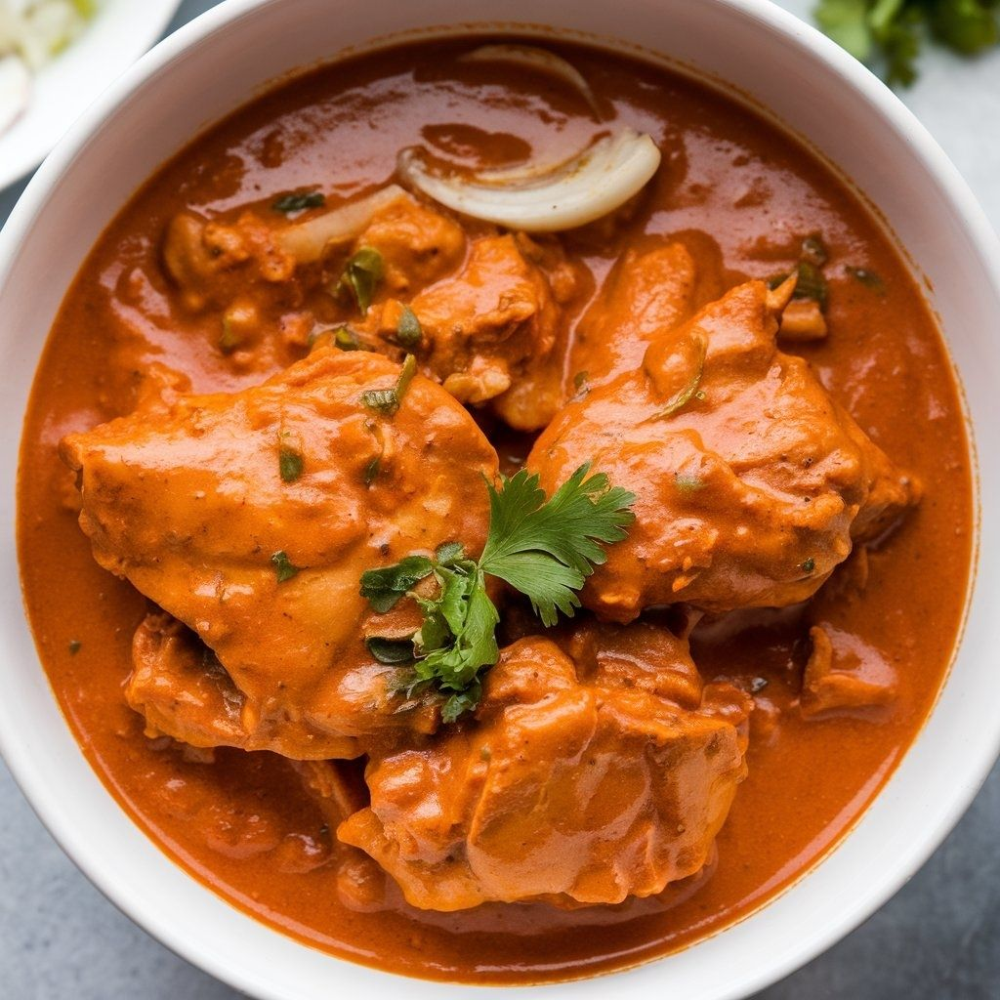
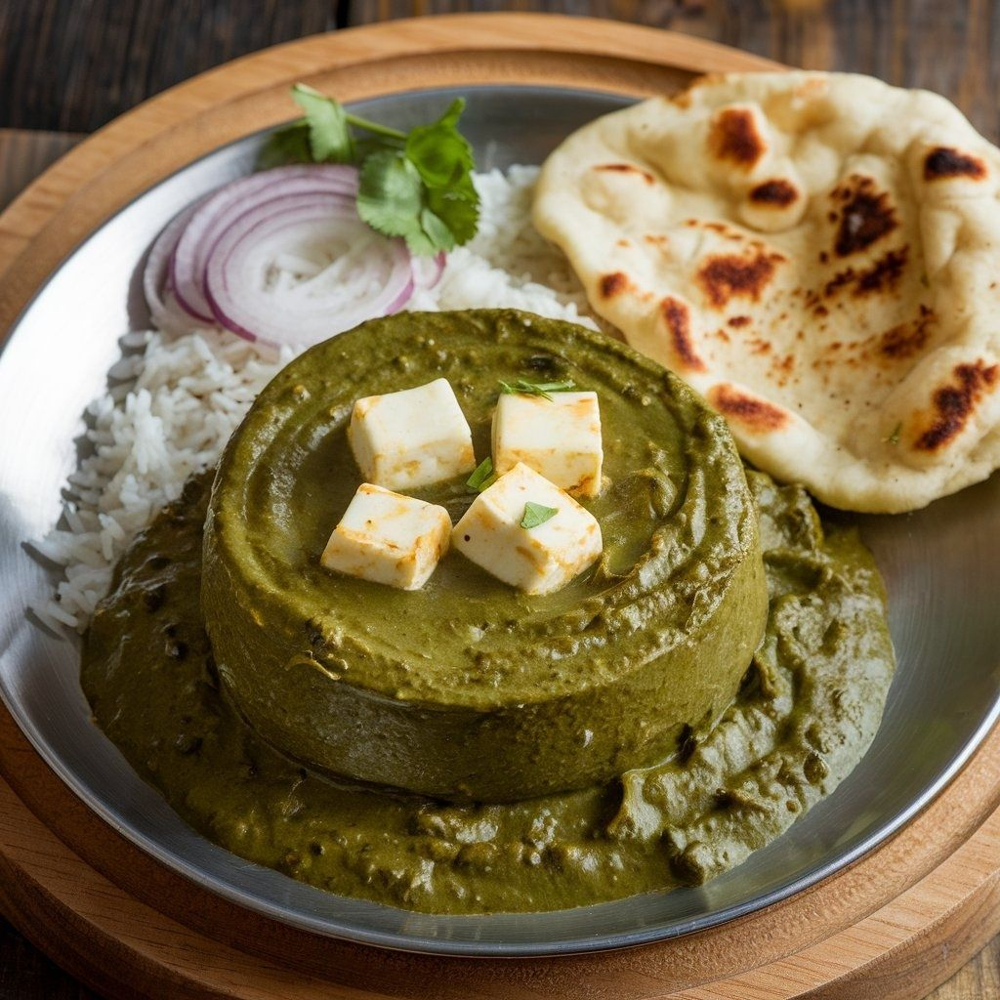

Chicken Tikka Masala
Ingredients:
- 1 1/2 pounds boneless, skinless chicken breast or thighs
- 1/2 cup plain yogurt
- 2 tablespoons lemon juice
- 2 tablespoons ghee or vegetable oil
- 2 teaspoons garam masala
- 1 teaspoon ground cumin
- 1/2 teaspoon ground coriander
- 1/2 teaspoon cayenne pepper (optional)
- 1 can (14 oz) diced tomatoes
- 1 cup chicken broth
- Salt and pepper, to taste
- Fresh cilantro, for garnish
Instructions:
Preheat oven to 400°F (200°C). In a large bowl, whisk together yogurt, lemon juice, ghee or oil, garam masala, cumin, coriander, cayenne pepper (if using), salt, and pepper. Add the chicken and mix until coated. Cover and refrigerate for at least 30 minutes or up to 2 hours.
Heat 2 tablespoons of oil in a large skillet over medium-high heat. Remove the chicken from the marinade, letting any excess liquid drip off. Cook the chicken until browned on all sides and cooked through, about 6-8 minutes. Transfer the chicken to a plate and set aside.
In the same skillet, add the diced tomatoes, chicken broth, salt, and pepper. Bring to a simmer and cook until the sauce has thickened, about 10-15 minutes. Stir in the cooked chicken and cook until heated through. Taste and adjust the seasoning as needed.
Garnish with cilantro and serve over basmati rice or with naan bread.
Palak Paneer
Ingredients:
- 1 cup paneer (Indian cheese), cut into small cubes
- 2 cups fresh spinach leaves
- 1/2 cup heavy cream
- 1 tablespoon ghee or vegetable oil
- 1 small onion, finely chopped
- 2 cloves garlic, minced
- 1 teaspoon ground cumin
- 1 teaspoon ground coriander
- 1/2 teaspoon garam masala
- Salt, to taste
Instructions:
Heat oil in a large skillet over medium heat. Add the onion and cook until softened, about 3-4 minutes. Add the garlic and cook for 1 minute.
Add the spinach leaves to the skillet and cook until wilted, about 2-3 minutes. Let cool slightly.
In a blender or food processor, puree the spinach mixture until smooth. Return the mixture to the skillet and add the heavy cream, cumin, coriander, garam masala, and salt. Bring to a simmer and cook until the sauce has thickened, about 5-7 minutes.
Add the paneer cubes to the skillet and cook until heated through. Taste and adjust the seasoning as needed.
Serve hot with naan bread or over basmati rice.